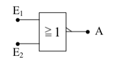
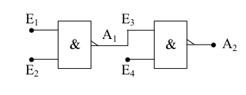
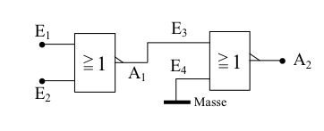

NOR-Gatter
Gebildet aus den englischen Wörtern not or, was übersetzt nicht oder heißt. Es handelt sich also wiederum um eine Negation, nämlich die der OR-Verknüpfung. Die mathematische Gleichung lautet:
A = ¬(E1 ∨ E2) (sprich: “E1 oder E2 negiert“)
Bei dieser Verknüpfungsschaltung hat der Ausgang A den Wert 1, wenn beide Eingänge den Wert 0 haben. In allen anderen Fällen hat der Ausgang den Wert 0.
Logiktabelle
| E1 | E2 | A |
|---|---|---|
| 0 | 0 | 1 |
| 0 | 1 | 0 |
| 1 | 0 | 0 |
| 1 | 1 | 0 |
Symbol

Da diese beiden letzten Gatter sehr häufig vorkommen, haben sie ein eigenes Schaltsymbol. Außerdem sind sie für den Praktiker sehr interessant, da sie gegenüber den UND- bzw. ODER-Gattern meist erheblich billiger sind. Deshalb nimmt man häufig zwei NAND-Gatter um ein UND-Gatter billig aufzubauen, oder zwei NOR-Gatter für ein OR-Gatter. Die dafür notwendigen Schaltungen werden im Folgenden erklärt.

Bei dieser Schaltung hat der Ausgang A1 nur dann den Wert 0, wenn beide Eingänge, also E1 und E2 den Wert 1 haben. Der offene (nicht angeschlossene) Eingang E4 hat generell den Wert 1. Um aber am Ausgang A2 den Wert 1 zu erreichen, muss deswegen E3 und somit am Ausgang A1 der Wert 0 anliegen. Dies wird, wie oben schon beschrieben, nur dadurch erreicht, dass man den Eingängen E1 und E2 den Wert 1 zuordnet.
Mathematisch ausgedrückt bedeutet dies:
A1 = ¬(E1 ∧ E2)
A2 = ¬A1 = ¬(¬(E1 ∧ E2))¬(¬(E1 ∧ E2)) ist aber nichts anderes als E1 ∧ E2; somit gilt die Funktionsgleichung der normalen UND-Verknüpfung:
A2 = E1 ∧ E2Dies beweist, dass die obige Schaltung einer normalen UND-Verknüpfung entspricht.

Die Logik dieser Schaltung ist ähnlich der Vorherigen. Der Ausgang A2 hat nur dann den Wert 0, wenn E3 den Wert 1 hat. E4 ist durch den Masseanschluss sowieso immer auf 0. Der Wert 1 an E3 und somit an A1 wird aber nur erreicht, indem man E1 und E2 den Wert 0 zuordnet. In allen anderen Fällen hat A1 den Wert 0 und damit A2 den Wert 1. Dies wiederum entspricht genau der OR-Verknüpfung.
Hier der mathematische Beweis:
A1 = ¬(E1 ∨ E2)
A2 = ¬A1 = ¬(¬(E1 ∨ E2)) = E1 ∨ E2Mit diesen nun beschriebenen 5 Grundschaltungen (AND-, NAND-, OR-, NOR-Gatter und Inverter) lassen sich alle anderen logischen Verknüpfungsschaltungen realisieren.
Man muss nur die gewünschten Elemente zusammenschalten. Den mathematischen Hintergrund für die Kombination der Gatter liefert die Boolesche Algebra. Die Grundfunktionen sind bei der Erklärung der Schaltungen mit angegeben.